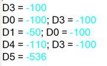

Переменные
Переменные в GX Works 2 это достаточно большая тема, и не для всех она простая. Даже если у вас есть опыт программирования например в CoDeSys то здесь концепт немного другой и сначала может быть немного не привычно. С другой стороны если вы уже программировали ПЛК такие как Delta или Omron, то трудностей с пониманием может не возникнуть.
Типы переменных
Стандартные типы переменных в GX Works 2 именуются отлично от стандарта МЭК-61131-3. Если мы говорим о FX3G\FX3U есть всего 7 типов.
| Тип | МЭК-61131-3 | Бит | Описание |
|---|---|---|---|
| Bit | BOOL, BIT |
1 | Булева переменная 0/1 |
| Word[Signed] | INT |
16 | Число со знаком -32,768 до 32,767 |
| Double Word[Signed] | DINT |
32 | Число со знаком -2,147,483,648 до 2,147,483,647 |
| Word[Unsigned/Bit String] | UINT, WORD |
16 | Число без знака 0 до 65,535 |
| Double Word[Unsigned/Bit String] | UDINT, DWORD |
32 | Число без знака 0 до 4,294,967,296 |
| FLOAT (Single precision) | REAL |
32 | С плавающей точкой -2128 до +2128 |
| Time | TIME |
32 | Время T#-24d20h31m23s648ms до T#24d20h31m23s647ms |
в GX Works 2 поддерживаются и другие типы данных. Например FLOAT (Double precision) это число с плавающей точкой но 64-bit. Или есть String как понятно из название это строка. Но они не поддерживаются для FX3G\FX3U, и поэтому мы не будем их рассматривать.
Блоки (Devices)
Прежде чем научится объявлять переменные, нужно постичь концепт GX Works 2 в отношении блоков.
В контроллерах Mitsubishi вся память разделена на разные области (D, R, M, Y, X, ...), и каждый блок области памяти пронумерован. Такой блок называют Device. Например D100, M10, TC0, X001, R1000. Блоки могут быть размером или 1-бит или 16-бит.
Блоки размером 1 бит это реле если в блок можно и писать и читать. В контексте записи в блок это катушки если в него можно писать, и контакты если его можно читать.
На блоки размером 16 бит часто ссылаются как регистр. Если мы храним значение больше чем 16-бит, то это значение просто занимает 2 или более регистров (блоков).
Информация
В других русских инструкциях Devices переведены как Операнды. Термин блок ввожу я, и если вы будете им где то оперировать, вас могут не понять. Еще одно подходящее название для термина Device - ячейка. Ссылается на ячейку в области памяти.
Давайте поговорим о самых важных для нас областях памяти.
Область X
| Назначение | Bit | Доступ | Диапазон | Значения |
|---|---|---|---|---|
| Входное реле | 1 | Читать | X000~X377 |
TRUE, FALSE или 0, 1 |
Область памяти напрямую связанная с аппаратными входами ПЛК и является контактом. Писать в него нельзя, только читать. Блок X000 это первый вход, X001 второй и так далее. Всего 255 входов.
Считается восьмеричной системой
На FX3G\FX3U данная область памяти считается в восьмеричном формате. Это значит что цифр 8 и 9 в счете нету. Х0, X1, X2, X3, X4, X5, X6, X7, X10, X11, и тд. X0~X7, X10~X17, X20~X27, ...
Когда на вход ПЛК поступает ток, контакт меняет сове значение с FALSE на TRUE или с 0 на 1. При сравнении данных контакта можно использовать как TRUE, FALSE так и 0, 1.
IF X0 = 1 THEN
Y0 := 1;
END_IF;
IF X2 = FALSE THEN
Y0 := FALSE;
END_IF;Это просто пример для демонстрации. Так ни кто не пишет естественно. Обычно выражение IF X0 = 1 THEN записывают IF X0 THEN, а IF X2 = FALSE THEN обычно пишут как IF NOT X2 THEN, тем не менее данный пример демонстрирует что можно использовать как TRUE, FALSE так и 0, 1.
Область Y
| Назначение | Bit | Доступ | Диапазон | Значения |
|---|---|---|---|---|
| Выходное реле | 1 | Читать Писать | Y000~Y377 |
TRUE, FALSE или 0, 1 |
Область памяти напрямую связанная с аппаратными выходами ПЛК и является реле. Можно как читать так и писать, но по сути они нужны чтобы именно писать в них. Когда мы пишем в реле то это катушка, когда читаем это контакт. Реле Y0 это первый выход, Y1 второй и так далее. Всего 255 реле.
Считается восьмеричной системой
На FX3G\FX3U данная область памяти считается в восьмеричном формате. Это значит что цифр 8 и 9 в счете нету. Y0, Y1, Y2, Y3, Y4, Y5, Y6, Y7, Y10, Y11, и тд. Y0~Y7, Y10~Y17, Y20~Y27, ...
Если присвоить реле Y0 значение TRUE или 1 то ПЛК замкнет соответствующее выходу реле или транзистор если выход транзисторный.
Y0 := X0;
Y1 := TRUE;
Y2 := Y0;В первой строке видно что можно писать в катушку Y значения контактов X и как дальше увидим M и других контактов, которые можно читать. А читать можно любые реле и контакты.
В третей строке мы видим что реле в Y можно как писать так и читать из него.
Область М
| Назначение | Bit | Доступ | Диапазон | Значения |
|---|---|---|---|---|
| Обычные | 1 | Читать Писать | M0~M383 |
TRUE, FALSE или 0, 1 |
| EEPROM энергонезависимые | 1 | Читать Писать | M384~M1535 |
TRUE, FALSE или 0, 1 |
| Обычные | 1 | Читать Писать | M1536~M7679 |
TRUE, FALSE или 0, 1 |
| Системные | 1 | Читать Писать | M8000~M8511 |
TRUE, FALSE или 0, 1 |
Это область "дополнительных реле", и связана с памятью ПЛК. Называются они "дополнительные реле", потому что не связаны с аппаратной платформой ПЛК, а существуют только в памяти программы. В M можно как писать так и читать из них.
Информация
Системные реле M8000~M8511 содержат доступ к аппаратной информации или флаги работы внутренних инструкций или позволяют конфигурировать некоторые аспекты работы ПЛК. Они по большей части совпадают с системными регистрами Mitsubishi. Например M8002 переходит в состояние TRUE один цикл ПЛК на старте, M8013 меняет свое состояние раз в секунду, если активировать M8192 то порт 3 перейдет из протокола Mitsubishi в режим Modbus.
Полный список системных реле M смотрите в документации Coolmay к ПЛК L02 coolmay/Documentation/EN/L02/Coolmay L02 Series PLC Programming Manual V22.111.pdf.
Область D
| Назначение | Bit | Доступ | Диапазон | Значения |
|---|---|---|---|---|
| Обычные | 16 | Читать Писать | D0~D127 |
-32,768 до 32,767 |
| EEPROM энергонезависимые | 16 | Читать Писать | D128~D7999 |
-32,768 до 32,767 |
| Системные | 16 | Читать Писать | D8000~D8511 |
-32,768 до 32,767 |
Основная область памяти для хранения значений переменных числового типа - регистры. Как 16ти битных так и 32ух битных. Регистры этой области ни знают какой тип данных в них хранится если в программе обращаться к регистру напрямую. По умолчанию значения регистра расцениваются как 16ти битные числа INT.
D3 := -100;
D0 := 0 + D3;
D1 := D0 / 2;
D4 := D3 - 10;
D5 := 65000;Значения при работе будут следующими

Так как это по умолчанию INT 16ти битный, то если мы присвоим ему значение больше 32,767, он их примет как WORD принимающий от 0 до 65,535, но автоматически сконвертирует значение в INT.
Забегая наперед
В реальных проектах вы вряд ли будете обращаться к регистрам D, да и любым другим блоками напрямую, а будете создавать символьные переменные и назначать им нужный тип. Я крайне не рекомендую работать с блоками напрямую, кроме блоков таймеров Т и счетчиков С и индекса Z.
Информация
Системные блоки M8000~M8511 содержат доступ к аппаратной информации или флаги работы внутренних инструкций или позволяют конфигурировать некоторые аспекты работы ПЛК. Они по большей части совпадают с системными регистрами Mitsubishi. Например, D8000 можно назначить таймер Watchdog, D8012 содержит максимальное время цикла ПЛК, D8030 значение на первом аналоговом входе ПЛК от 0~4092.
Полный список системных регистров D смотрите в документации Coolmay к ПЛК L02 coolmay/Documentation/EN/L02/Coolmay L02 Series PLC Programming Manual V22.111.pdf.
Область R
| Назначение | Bit | Доступ | Диапазон | Значения |
|---|---|---|---|---|
| EEPROM энергонезависимые | 16 | Читать Писать | R0~R22999 |
-32,768 до 32,767 |
| Системные | 16 | Читать Писать | R23000~R23999 |
-32,768 до 32,767 |
Регистры области R это тоже самое что и D. Можно использовать и те и другие. Они все поддерживают сохранение при потере питания.
Системные регистры тут не относятся к системным регистрам Mitsubishi, а зарезервированы Coolmay для их собственных решений. Например: R23700 хранит значение на первом аналоговом входе модуля расширения и принимает значение 0-32,000.
Область T и С
Область хранения данных таймеров и счетчиков. Мы сейчас о них не будем говорить, а подробно рассмотрим их когда будем изучать эту тему.
Энергонезависимость
Если вам нужно использовать блоки, так чтобы они сохраняли свои значения после перезагрузки ПЛК то нужно использовать диапазон помеченный как EEPROM энергонезависимые. Для М это M384~M1535, для D это D128~D7999 и для R это все.
IF X2 THEN
M400 := TRUE;
M2000 := TRUE;
D0 := 100;
D200 := 100;
END_IF;В данном примере если мы кратковременно подадим ток на вход X2 то M400 и M2000 примут значение TRUE a D0 и D200 примут значение 100. Если после этого перегрузить ПЛК, то только M400 сохранит значение TRUE и D200 значение 100, а M2000 и D0 будет сброшено в FALSE и 0.
Как это использовать?
Для блоков D я например использую D0~D127 для записи значения с датчиков, расчетные результаты которые делаются каждый цикл программы. А энергонезависимые для создания переменных в которых находятся настройки которые вводятся с панели. Тоже самое относительно блоков М. Я использую энергонезависимый диапазон если например есть кнопка запуска котла, она была включена когда пропало питание, и я хочу чтобы после восстановления питания кнопка так же была включена.
Раз уж мы заговорили об EEPROM нужно упомянуть, все области памяти, в которые нужно жестко записывать для хранения без питания, как правило имеют ограниченное количество циклов записи. Что то, около 50 000. Значит ли это, что если вы используете переменную которая очень часто меняется, например 2 раза в секунду, то через 25 000 секунд она исчерпает ресурс памяти на запись?
Ответ НЕТ. Запись в EEPROM происходит только в момент выключение ПЛК, и чтение в момент загрузки ПЛК. Так что не беспокойтесь. Текущие присвоения значений во время обычной работы ПЛК работают с оперативной памятью которая такими ограничениями не обладает. А если ПЛК включать и выключать хотя бы один раз в день, то ограничения памяти на запись, хватит больше чем на 100 лет.
Объявление переменных
Ну вот наконец-то мы подошли к моменту когда мы можем объявить наши первые переменные. в GX Works 2 есть две основные области определения переменных.
- Глобальная (Global Label)
- Локальная (Local Label)
Переменные в GX Works 2 называются Label переводится как (Ярлык, метка, этикетка). Думаю метка это самое подходящее, по мне и это не подходит. Правильная терминология будет Символьная переменная.
Например в программе когда вы обращаетесь напрямую к регистру допустим D0 то хотя имени нет, только номер ячейки, все равно с позиции программы это переменная. Тесть область памяти которая хранит изменчивое значение. Для Siemens это может быть какой-нибудь E0.1. Но если мы создадим глобальную переменную ну или локальную в принципе без разницы, дадим ей имя, то она уже будет состоять из символов, например xStart, таким образом объявленные переменные с именами называются Символьная переменная.
Мы будем называть просто переменная при этом подразумевая Символьная переменная.
Глобальная
Переменные объявленные в глобальной области видны в любых POU. В программах и Функциональных Блоках. К сожалению в функциях нельзя использовать глобальные переменные. Если попытаться это - ошибка компиляции. Даже константы нельзя, хотя я считаю это уже бессмысленным ограничением.
Перейдем в дерево проекта и раскроем ветку Global Label. По умолчанию там уже есть один список переменных по имени Global1. Я в своих программах всегда создаю минимум 2 списка. Один полностью посвящен переменным привязанным к входам и выходам, а второй для остальных переменных. Давайте объявим несколько переменных и потом подробно об этом поговорим. Будем объявлять переменные как будто пишем программу запуска насоса через ПЧ.
- Для начала переименуем Global1 в IO.
- Откроем список двойным кликом. Обратите внимание в панели инструментов у нас появилось вспомогательное меню. Такое меню появляется на разных окнах разное. В нем инструменты которые применимы только к текущему открытому окну. Вы можете пользоваться этим меню, а так же при нажатии правой кнопки мыши, все эти элементы и даже больше, можно увидеть в контекстном меню. Я пользуюсь именно контекстным меню и обычно не использую меню в панели инструментов.
-
Введу имя
DI_Startи нажму табуляцию. Как видите класс автоматически выбрался. В этом списке нам доступно всего 2 класса,VAR_GLOBALиVAR_GLOBAL CONSTANT. Разница между ними в том чтоVAR_GLOBALможно и читать и писать, аVAR_GLOBAL CONSTANTможно только читать, и значение переменной присваивается во время загрузки ПЛК и его будет нужно обязательно указать тут. Позже создадим константу.Так же обратите внимание на префикс переменной. Только для глобальных переменных в списке IO я использую такие префиксы. Это
- DI для переменных входов ПЛК
- DO для переменных выходов ПЛК
- AI для переменных аналоговых входов ПЛК
- AO для переменных аналоговых входов ПЛК
Это очень удобно, в программе я сразу вижу что работаю напрямую с выходом или входом, и понятно это реле или регистр. 4. В поле девайс введем Х0 и нажмем ввод. Мы увидим что тип переменной выбрался автоматически и это Bit. Так же появился адрес
%IX0но в GX Works 2 это единственное место где его видно, и нет мест где это можно использовать, потому что все ссылается на ячейки. Так что просто не обращайте на это внимание это нам совсем не пригодиться. 5. Осталось только ввести комментарий "Запустить двигатель" 6. Хорошо теперь объявим еще несколько переменных. Для удобства если у нас выделена наша первая переменная, мы можем нажать вот на эту кнопку (New Declaration After..) новое объявление после... и увидим что нас создалась копия, можно так же через контекстное меню выбрать ту же команду. Нужно только поменять именаDI_StopDI_Alarm. А девайс у нас автоматически инкриминировался. Напишем комментарии "Остановить двигатель" и "Ошибка ПЧ". Закончили с входными переменными. 7. Объявим переменнуюDO_StartVFD. Но в поле девайс теперь вставим Y0 так как мы привязываем эту переменную к выходу ПЛК. Добавим комментарий "Запуск ПЧ". Добавим еще одну переменнуюDO_AlarmResetи комментарий "Сброс ошибки ПЧ" 8. Мы наверно не сразу приступим к работе с аналоговыми входами, но что мешает нам объявить переменные? Впишем имяAO_VFDSpeed. Это будет аналоговый выход который устанавливает скорость на ПЧ. Как девайс впишемD8050. Аналоговые выходы на самом головном устройстве ПЛК которых может быть максимум 4 привязываются к ячейкамD8050~D8053. Мы привяжем к первой ячейке. Конечно же 4 выхода это не предел, мы можем установить модуля расширения и добавить уж не помню сколько, но достаточно. О входах выходах подробней позже. Добавлю комментарий "Скорость ПЧ". 9. Ну и добавим аналоговый вход, предположим это будет давление.AI_Pressureи комментарий "Давление". Привязку входа мы сделаем кD0. Почему кDOмы так же узнаем позже когда этот вход обработаем.
Ну вот все мы создали список IO. Нам теперь еще нужен список глобальных переменных для настроек работы.
- В дереве проекта ПКМ - это правая кнопка мыши на элементе глобальный переменных и выберем Add New Data..
-
В появившемся окне вводим имя GVL ЛКМ сохранить. Видим что в дереве проекта добавился элемент и этот список сразу открылся.
Обратите внимание на тот факт что явно привязывать переменные к ячейкам, можно только в глобальном списке. В локальном такая возможность отсутствует и привязка делается автоматически. Это значит что любые переменные которые мы например хотим привязать к панели оператора, можно объявить только в глобальном списке. Это связано с тем что в панели, которые мы как правило подключаем для удобство по протоколу Mitsubishi, мы обращаемся именно к номерам ячеек. Если мы явно не указали привязку, хотя после компиляции мы можем видеть какая ячейка назначена локальной переменной, мы не можем ее использовать на панели, потому что в процессе разработки программы, при новой компиляции эта ячейка может измениться.
-
Создадим переменную
giWorkModeи привяжем ее к D300. Нужно минимум D128 чтобы значение в этой переменной сохранялось при перезагрузке ПЛК. Это будет выбор режима работы. Добавим комментарий "Режим работы 0 - Вкл.\Выкл., 1 - Мультиспид, 2 - Аналог"Обратите внимание на префикс. В то время на переменным числовым я даю префикс i а битовым x, в глобальном списке я добавляю к нм букву g. Так в программе видно сразу что это глобальная переменная. Хотя и так видно хорошо, потому что она другого цвета чем локальная, но так же быстрей можно найти ее при помощи выпадающего списка, я пишу gi и вижу все регистры глобальные, пишу gx и вижу все глобальные реле в выпадающем списке. Это удобно. 4. Будет 3 режима работы, вкл.\выкл., многоскоростной, и плавный. Это когда скорость будет выбираться из четко прописанных, или плавно устанавливаться. Ни знаю какое у этого может быть практическое применение, скорей всего ни какого, но чтобы разобраться с языком нам подойдет. Добавим переменную
C_MODE_ONOF. Давайте поменяем ее класс и выберемVAR_GLOBAL CONSTANT. Смотрите, у нас кое что изменилось. Во первых мы больше не можем привязывать ячейку, и открылось поле значения. Давайте впишем туда 0 и комментарий "Режим вкл. выкл."Обратите внимание на префикс C_. Это префикс который я использую для констант. И имя переменной я пишу все большими буквами. Как уже упоминал подобный подход позволяет видеть сразу что это глобальная переменная является константой, так как другим цветом она не подсвечивается, а так же быстро искать их в выпадающем меню. Пишем C_ и список всех констант сразу видим. 5. Добавим еще 2 константы
C_MODE_MULTISPEEDзначение 1 и комментарий "Режим многоскоростной" , теперьC_MODE_ANALOGзначение 2 и комментарий "Режим Аналог".
Области видимости
В GX Works 2 есть несколько областей видимости переменных.
- Глобальные
- Локальные
- Локальные
- Входные
- Выходные
- Проходные
Глобальные
-65,536 to 65,535 0 to 4,294,967,296 2,147,483,648
Глобальнее переменные определяются в списке глобальны переменных.